后面不如去码头整点薯条。more to be
continued...
NOTES, GAMES & OTHER THINGS✧叫我夕雾就好✧游戏和碎碎念✧还没想明白也照样写
01 / BEHIND THE CLOUDS
关于夕雾
夕雾称呼代词：她
这里放我想留下来的文字。想到什么，就慢慢写。
02 / NOTES & RAMBLINGS
一些思考，一点情绪
有些事想了很多遍，
写下来还是没答案。
按本站收录时间整理，文中的经历日期以正文为准。
这段时间还没有这个主题的随笔。
先别急着升华。
我是真的想吃薯条。
03 / READ A LITTLE FURTHER
一些中文资料与工具。
想查资料，或找些工具，
可以从这里看看。
01中文 · 知识与医疗 ↗02中文 · 用药记录 ↗03中文 · 纪念与记录 ↗04中文 · 日常生活 ↗
MtF.wiki
跨性别知识、医疗资源与生活办事指南。
HRT Tracker
记录 HRT 用药时间与剂量的工具。
那些秋叶 · One Among Us
记录与纪念离世者的故事。内容涉及离世与创伤经历。
RLE.wiki
跨性别与性别多元群体的生活指南，包含校园、时尚护理和安全防护等内容。
资料按需参考；HRT 记录工具不能代替医疗建议。
04 / BEFORE YOU ASK
有几件事，
提前说一下。
怎么叫你？
夕雾，代词用「她」。叫错了改一下就行，不用围绕这件事开一场道歉大会。
可以问私事吗？
真实身份、身体、医疗和关系细节不聊，也不会拿别人的私事凑文章。这里已经写出来的想法可以讨论，没写的部分就先留着。
可以转发吗？
先问我。转发时请保留上下文和署名，不要拿零碎句子去猜现实身份，也别把这里的文字和其他人的私人信息拼在一起。
05 / MORE TO BE CONTINUED
就先写到这里。
想起别的再补。
谢谢你看完。没看完也没事，我自己有时都嫌长。